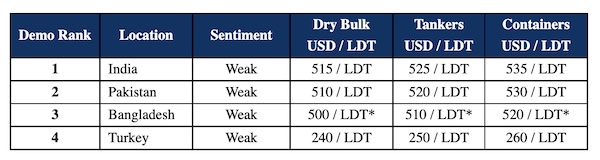

GMS Week 46 – PROLONGED MALAISE!
in Weekly Demolition Reports 21/11/2022

All recycling destinations across the Indian sub-continent and even Turkey have been suffering a prolonged and agonizing malaise over the past six months (at least), one that’s showing no sign of abating any time soon.
In fact, prices have deteriorated even further this week at all sub-continent locations and receiving indications / offers – even in the USD 400s/LDT on small LDT units – is gradually becoming a reality.
As such, any Ship Owner expecting some of the better levels (even from last week) will have to readjust their expectations much lower, in order to bring any sort of firm offer to the table.
L/Cs are continually proving to be extremely difficult to get approved these days, especially in Bangladesh, where the government is not sanctioning any fresh L/Cs for vessels, leading to a virtual standstill of the industry there.
Indeed, we have seen multiple vessels enter the market and turn straight back around for trading (even at the reduced dry bulk and container levels of today), having either not found a Buyer with a ready L/C or having suffered embarrassingly low offers.
The price ideas mentioned below are simply illusory, as the key thing today is finding a firm End Buyer at a reasonable level and with a workable L/C, which is turning out to be the most challenging of issues facing Cash Buyers at present.
Overall, it is expected to be a dark and bleak winter for a withering ship recycling industry, especially after the decade long high in prices above USD 700/LDT whilst business boomed during the early part of this year.
For week 46 of 2022, GMS demo rankings / pricing for the week are as below.

📄 Download PDF: Ship-recycling-market-insight-week-46-2022-Prolonged-Malaise.pdfSource: GMS,Inc. , https://www.gmsinc.net/gms_new/index.php/web
 Translate
Translate{kind=link}